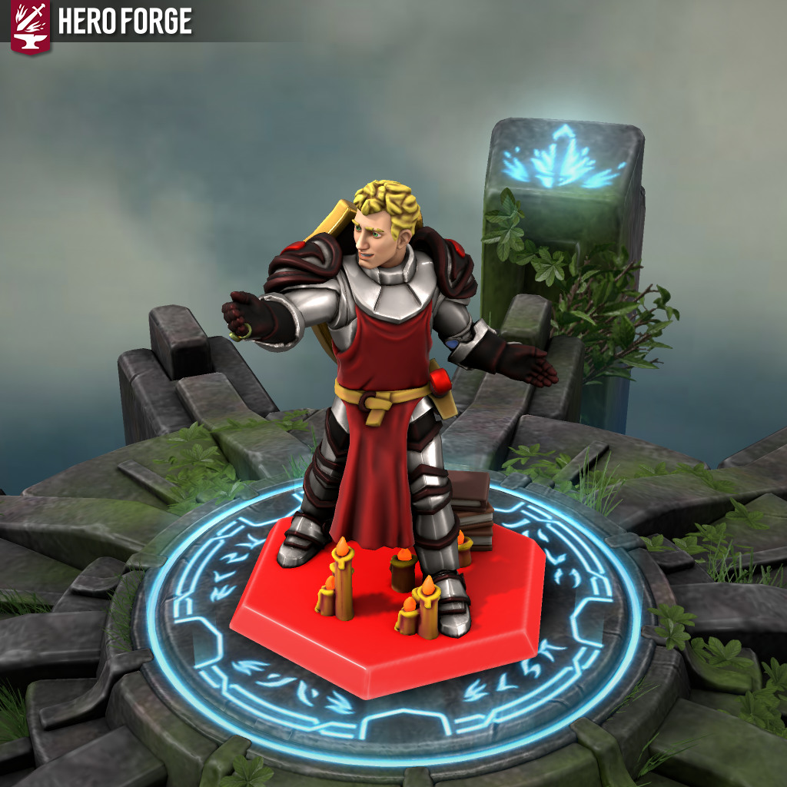
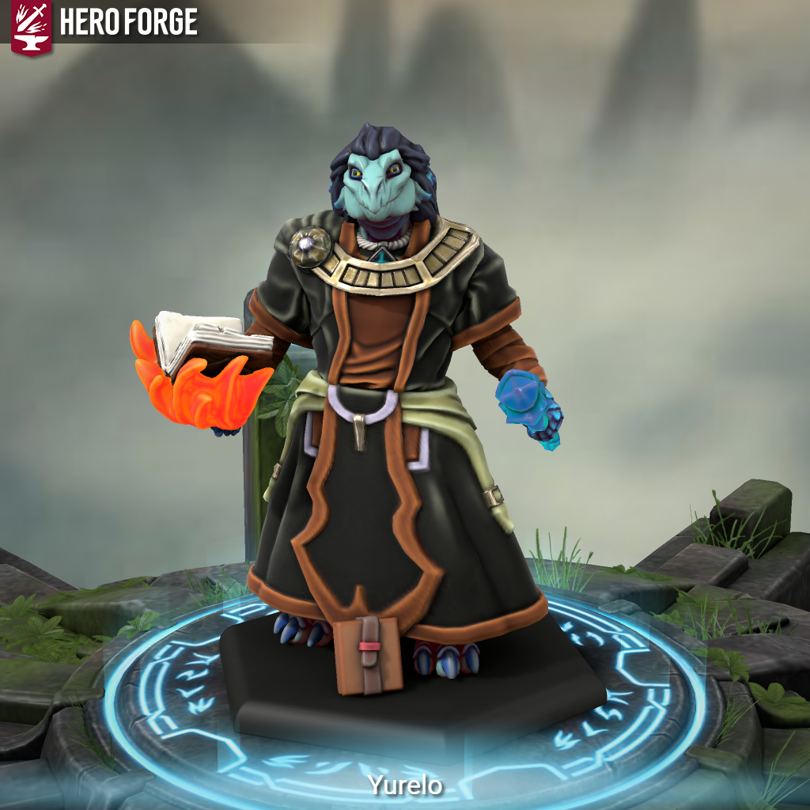

Salazar Brightwood(Strider)
Born into the Brightwood family, Salazar never went without. His family where the rulers of Arcfree a city known for its delectable delights, the Brightwood family were adored by their subjects as they always looked after their own. Arcfree was known as the white city as very little crime ever occurred.
Salazar was born a twin (Marcon) though not identical they both shared enough features to be recognisable, as a child Salazar focused on learning about religion, history and politics due to the day that he would take up the mantle of responsibility of being named governor of Arcfree that was until his brother betrayed both him and his family.
Marcon poisoned the high mage on the city council so that he could appoint a new mage, one that would assist with his plan to remove his parents from power and exile his brother so that he could take the power for himself. The new mage corrupted Salazar's mother's mind instructing her to murder her husband in his sleep, the next morning when she awoke covered in blood she confessed to the guards.
Salazar who now was set to become governor was summoned by the city council and was given the choice of what to do with his mother, already having one parent stolen away Salazar issues life in imprisonment. Salazar's mother was taken away to the dungeon, later that night Salazar went to the dungeon to question his mother though found her unconscious.
Rushing to her aid Salazar gripped onto her lifeless corpse, within seconds guards, Marcon and the new mage stormed into the cell, convicted of murdering his own mother Salazar was to be stripped of all titles and to be exiled. Salazar spent a week imprisoned in the very cell his mother died in with no visitors, he was dead to the world.
Until one night, Salazar was awoken by a human who was watching him sleep, after a brief conversation the man chose to believe that Salazar was innocent and gave Salazar a choice, to remain in the cell or come with him and join his order. Salazar chose the latter and has never looked back since, he had devoted his life to the Everwatch and learnt from the many Paladins and Priests at their keep. Aware of the needed tragedy to join the Everwatch, Salazar has never questioned the events that took place as he finds the memories to painful to remember.
Yurelo
A blue scaled dragonborn sorcerer who was born in Abeir. Yurelo’s comes from a family of sorcerers whos long family lineage can be traced back to a powerful red scaled dragon called Aidyneiss, as a child Yurelo learnt of his families history and his families place in the world. Quite a powerful family in Abeir, Yurelo knew that there would be certain things expected from him especially from his father who would demand that Yurelo take his seat on the city council once he was old enough.
Though through his studies of politics, magic, and history, Yurelo found a strong interesting in magical items. Born with his abilities one could say he took them for granted but a single object that houses its own magic and is able to produce a spell astonished Yurelo and then along with his history studies of different magical or cursed items lost to the world Yurelo longed to own a huge collection, to have an item that no one else possessed and to learn more of their abilities, Yurelo decided to dedicate his life to the pursuit of these items.
When Yurelo told his father of his plans to explore he was furious and demanded that he put these foolish notions out of his head and focus on becoming one of the leaders for his people. Yurelo disheartened by his fathers reaction spent a few years doing what his father wanted, though his mother encouraged him to continue his passion through the vast libraries in Abeir, if he could not venture out to discover these artifacts then perhaps reading about those who have or about the artefacts themselves would quench his thirst.
Through his younger years Yurelo continued to do what was expected of him until his mother took drastically ill upon her death bed, she encouraged Yurelo to leave Abeir and follow his dream. In their last moments together Yurelo’s mother revealed some of her own dreams and told Yurelo how she was forced to live a life she never wanted which gave her the determination to allow her children to become whatever they want though she had failed and for the past few years of her life she felt great shame.
Upon learning this revelation Yurelo consoled his mother and gave her comfort as she drew her last breath, devasted at his loss Yurelo knew that if he remained his father would demand he continue to do what is expected. Gathering what possessions, he could Yurelo took one final look at his mother and vowed to do her proud. Vanishing in the night Yurelo caught a ship leaving for Uvirium and bought passage.
Once arriving in Uvirium, Yurelo only had so much money to survive, and his name carried very little sway in this continent. Finding a job in a random store and quickly learning the meaning of a hard days work Yurelo began to wonder if he had made a mistake leaving Abeir though regardless if he wanted to return he would have to continue to work to be able to afford the passage.
A year passed as Yurelo worked in a store that saw thousands of random customers from all over the continent and world, working in a port city did have some advantages as he was able to hear rumours of treasure, magical items or tales of cursed tombs and took note of them all in his journal. Eventually earning enough money to return to Abeir Yurelo was left with a ultimatum he either returned to Abeir and face whatever punishment his father deemed appropriate and accept that his dream were in fact foolish or uses his money to purchase a horse and travelling gear and pursue his dreams.
Choosing the latter Yurelo felt the thrill of adventure with excitement coursing through his entire body. Through his travels Yurelo met many people and built quite the reputation, once he had amassed a collection of items, scrolls and blueprints Yurelo learnt that could sell these items to fund future expeditions and thus Yurelo the travelling dragonborn salesman was born though not liking this title Yurelo decided to create a name for his new business: Delectable Enchantments.